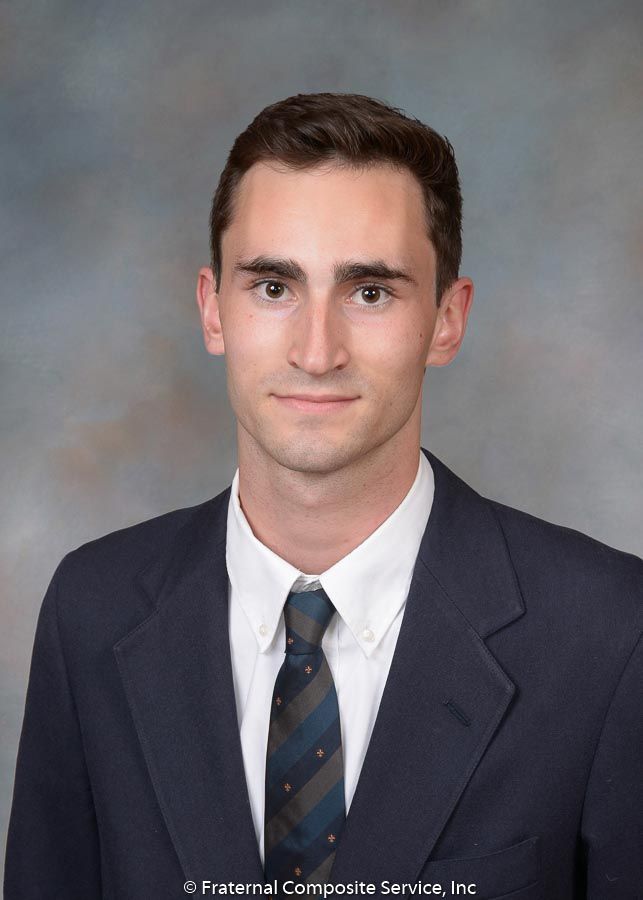

I’ve also had a large role in creating The Migraine Club, a student led organization at Michigan that focuses on providing awareness, information, support, and fundraising for people with migraine disease. With the foundations of the group set in place at the end of my sophomore year, I look forward to finding success and aiding those in need during my junior campaign.
High School taught me that analysis is one of my best strengths, which led me on my path to UMSI. The ability to merge the business and technical sides of the professional world motivated me to join the program and fuels my passion for information science and analytics. I have followed my passions along the transition into college life, enjoying time outdoors, playing sports, and making music. Leaderships continues guide my compass as I progress through college. Freshman year, I was the president of my fraternity pledge class, which led me to become president of the entire fraternity as a sophomore. Under my guidance, my chapter has done nothing but improve in the midst of trying times such as the IFC self-suspension and disaffiliation of half the fraternities on campus. We’ve increased the number of brothers, created new philanthropy events, and improved chapter GPA. My time as president has taught me a great deal about problem solving in the moment and working with peers to accomplish goals.
My name is Will Godley and I’m a junior in the BSI program at University of Michigan. I’m from North Kingstown, RI and completed high school at the Wheeler School in Providence, RI. In high school, I found great joy in leadership roles in my extracurriculars such as soccer, lacrosse, guitar ensemble, Soccer without Borders Club, and the Snowsports Club. Additionally, I served many leadership roles in my time in scouting, culminating with the rank of Eagle Scout.
